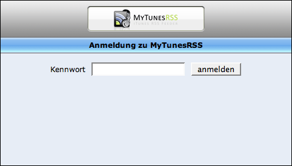
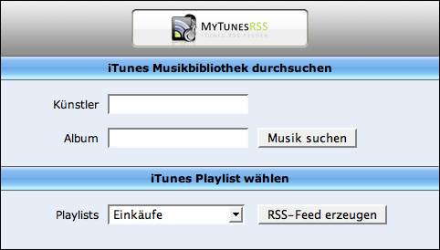
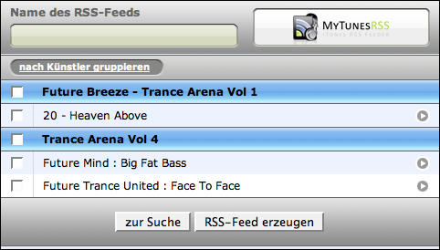

Nachdem Sie den Server gestartet haben, können Sie mit einem Browser auf die Webanwendung zugreifen. Als ersten Test sollten Sie unbedingt einen Browser auf dem Rechner starten, auf dem MyTunesRSS läuft. Geben Sie als Adresse "http://127.0.0.1:8080" ein. Passen Sie den Port in der Adresse an, wenn Sie ihn verändert haben. Wenn Sie nun die Suchmaske oder - sofern die Authentifizierung aktiviert ist - die Loginmaske sehen, funktioniert MyTunesRSS einwandfrei. Wenn Sie beim Zugriff von anderen Rechnern aus Probleme haben, überprüfen Sie bitte Ihr Netzwerk auf Probleme (z.B. ein blockierende Firewall).
Geben Sie bei aktivierter Authentifizierung auf der Loginmaske das Kennwort aus den Einstellungen ein, um auf die Suchmaske zu gelangen. Der Zugriff auf Ihre iTunes Musikbibliothek ist durch das Kennwort geschützt.
Auf der Suchmaske können Sie - in der registrierten Version - direkt aus einer Wiedergabeliste einen RSS Feed erstellen. Wenn Sie keine entsprechende Wiedergabeliste haben, können Sie auch in die beiden Felder "Künstler" und "Album" beliebige Suchbegriffe eingeben. Es werden alle Titel gefunden, auf die die beiden Angaben zutreffen. Wenn Sie beispielsweise beide Felder leer lassen, würden sämtliche Titel Ihrer Musikbibliothek gefunden. Das Ergebnis ist jedoch auf maximal 200 Treffer eingeschränkt.
Wenn Sie ein Suchergebnis haben, können Sie oben in der Maske einen Namen für den RSS Feed eingeben. Darunter befinden sich Knöpfe, um das Ergebnis wahlweise nach Künster oder Album zu gruppieren. Sie können beliebige Titel auswählen und mit dem Knopf an Ende der Seite einen RSS Feed erzeugen. Wenn Sie alle Titel einer Gruppe, also eine Künstlers oder eines Albums, je nach Gruppierung, auswählen möchten, aktivieren Sie bitte die Auswahlbox neben der Gruppe. Mit dem kleinen Pfeilknopf rechts von einem Titel können Sie diesen direkt wiedergeben, d.h. auf das Zielgerät herunterladen.